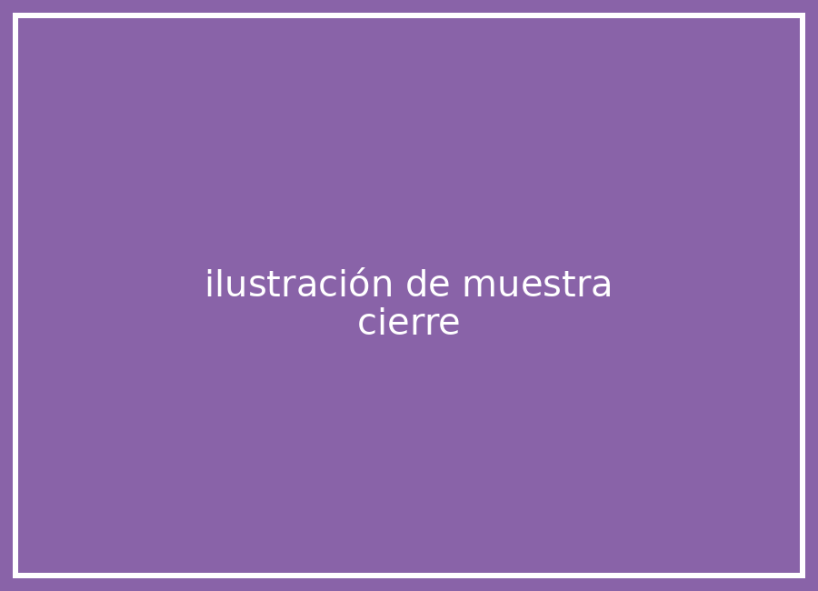

Una situación de muestra abre esta actividad de cierre.
Toca el botón para recorrer sus pasos de prueba.

Ilustración de muestra de cierre
Consigna de muestra del paso 1 de Cierre: aquí va lo que el estudiante hace en este paso.
Consigna de muestra del paso 2 de Cierre: aquí va lo que el estudiante hace en este paso.
Consigna de muestra del paso 3 de Cierre: aquí va lo que el estudiante hace en este paso.
Consigna de muestra del paso 4 de Cierre: aquí va lo que el estudiante hace en este paso.
Consigna de muestra del paso 5 de Cierre: aquí va lo que el estudiante hace en este paso.
Consigna de muestra del paso 6 de Cierre: aquí va lo que el estudiante hace en este paso.
Consigna de muestra del paso 7 de Cierre: aquí va lo que el estudiante hace en este paso.
Consigna de muestra del paso 8 de Cierre: aquí va lo que el estudiante hace en este paso.
Consigna de muestra del paso 9 de Cierre: aquí va lo que el estudiante hace en este paso.
Consigna de muestra del paso 10 de Cierre: aquí va lo que el estudiante hace en este paso.
Texto de muestra del recuadro de cierre: aquí va la conclusión de lo trabajado en cierre, no una felicitación.